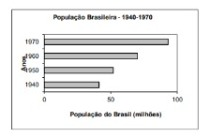
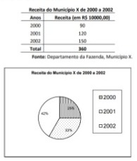
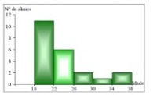

A representação gráfica das séries estatísticas tem por finalidade representar os resultados obtidos em algo visível para se chegar a conclusões sobre a evolução do fenômeno ou como os valores da série se relacionam.
Ele é basicamente igual ao gráfico em colunas, porém os retângulos são dispostos horizontalmente.
Esse tipo de gráfico como o nome já diz, é separado em setores, como um gráfico de pizza
É utilizado para dados agrupados em classes
